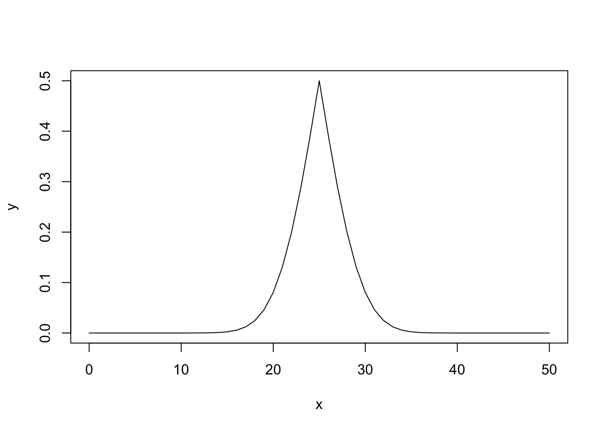
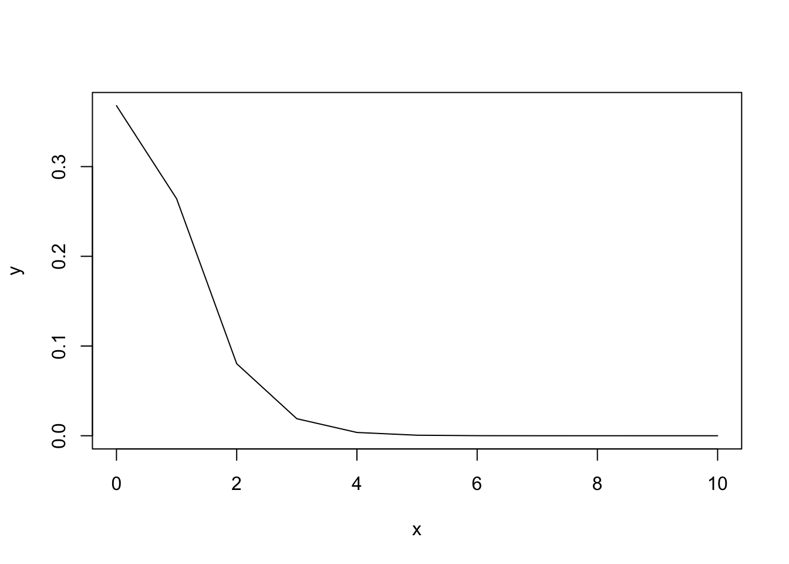

x <- pbinom(q = 9, # number successes, 9 heads
size = 10, # number of trials, 10 flips
prob = 0.5) # probability with a fair coin
round(x,4)[1] 0.999We rely on multiple different probability distributions to help us understand what probable outcomes are for a specific scenario. All of the tests that we are performing are comparing our results to what we would expect under perfectly random scenarios. For example, if we are flipping a coin, we are interested in whether the the observation we have of the flips on our coin matches our expectation given the probability of getting heads or tails on a perfectly fair coin. While it is possible to get all heads or all tails on a coin flip, it is highly unlikely and may lead us to believe we have an unfair coin. The more trails we perform, the more confident we can be that out coin is atypical.
We perform similar comparisons for other distributions. If we are comparing sets of events, we can look at the probability of those events occurring if events are occurring randomly. If we are comparing counts, we can compare our counts to our expectation of counts if events or subjects are distributed randomly throughout the matrix or whether two sets of counts are likely under the same sets of assumptions.
Remember, for our specific tests, we are setting an \(\alpha\) value in advance (traditionally \(0.05\), or \(5\)%) against which we compare our \(p\) value, with \(p\) representing the probability of observing an event as extreme or more extreme than the event we observe given a specific probability distribution.
Previously, we talked about the normal distribution, which is used to approximate a lot of datasets in nature. However, several other probability distributions are also useful for biological systems, which are outlined here.
A binomial distribution is one in which only two outcomes are possible - often coded as \(0\) and \(1\) and usually representing failure and success, respectively. The binomial is described by the following function:
\[ p(x)=\binom{n}{x}p^{x}(1-p)^{n-x} \]
where \(n =\) number of trials, \(x =\) the number of successes, and \(p =\) the probability of a success under random conditions.
In R, the binomial distribution is represented by the following functions:
dbinom: the density of a binomial distribution
pbinom: the distribution function, or the probability of a specific observation
qbinom: the value at which a specific probability is found (the quantile function)
rbinom: generates random values according to a binomial.
Let’s see what this looks like. Let’s consider a scenario where we flip a coin 10 times and get 9 heads. How likely is this outcome?
x <- pbinom(q = 9, # number successes, 9 heads
size = 10, # number of trials, 10 flips
prob = 0.5) # probability with a fair coin
round(x,4)[1] 0.999NOTE that the trailing \(0\) is dropped, such that the real answer is \(0.9990\). However, we mentioned before that the \(p\) value should be the probability of a result as extreme or more extreme, meaning that it should always be less than \(0.5\). If we are reporting a value of greater than \(0.5\), then we are comparing to the upper tail of the distribution. For a one-tailed \(\alpha\) of \(0.05\), this would mean that we are looking for a value greater than \(0.95\) (\(1-\alpha\)).
So, our real \(p\) is:
1 - round(x,4)[1] 0.001Again, the trailing zero is missing. Given that \(p < \alpha\), we reject the null hypothesis that this is a fair coin.
How does this distribution look?
# number of successes
# start at 0 for no heads
x <- 0:10
# cumulative probability to left of outcome
y <- pbinom(x,
size = 10,
prob = 0.5,
lower.tail = T)
# cumulative probability of results to the left
plot(x,
y,
type="l") # line plotWhat about if we always have \(p\) less than \(0.5\) to reflect two tails?
# any value greater than 0.5 is subtracted from 1
y[y > 0.5] <- 1 - y[y > 0.5]
plot(x,
y,
type="l")What if we do this with a bigger dataset, like for \(50\) flips?
# number of successes
# start at 0 for no heads
x <- 0:50
# cumulative probability to left of outcome
y <- pbinom(x,
size = length(x),
prob = 0.5,
lower.tail = T)
# any value greater than 0.5 is subtracted from 1
y[y > 0.5] <- 1 - y[y > 0.5]
plot(x,
y,
type="l")
As we increase the number of flips, we can see that the probability of success forms a normal distribution centered on the outcome given the default probability. Thus, as we deviate from our expected outcome (initial probability multiple by the number of trials), then our results become less likely.
We can perform exact binomial tests by using the R function binom.test. This is a built in function within R. This test requires the following arguments:
x: number of successes (success = outcome of interest)
n: number of trials (number of events)
p: probability of success in a typical situation (i.e., for a fair coin, this is \(50\)%)
alternative: the hypothesis to be tested, whether two.sided, greater, or less.
conf.level is the confidence level to be returned; default is \(95\)%.
Let’s say you flip a coin ten times, randomly assigning one side as a “success” and one side as a “failure”. We do ten flips, and get 3 “successes”. How likely is this outcome?
binom.test(x = 3, # three successes
n = 10, # ten flips
p = 0.5) # 50% chance on fair coin
Exact binomial test
data: 3 and 10
number of successes = 3, number of trials = 10, p-value = 0.3438
alternative hypothesis: true probability of success is not equal to 0.5
95 percent confidence interval:
0.06673951 0.65245285
sample estimates:
probability of success
0.3 Now let’s say we do 1000 flips, and we get 300 successes.
binom.test(x = 300,
n = 1000,
p = 0.5)
Exact binomial test
data: 300 and 1000
number of successes = 300, number of trials = 1000, p-value < 2.2e-16
alternative hypothesis: true probability of success is not equal to 0.5
95 percent confidence interval:
0.2717211 0.3294617
sample estimates:
probability of success
0.3 As we can see, both of these return a confidence interval among other things. If we save the object, we can access these “slots” of data using the $ character.
binom_result <- binom.test(x = 3,
n = 10,
p = 0.5)
binom_result$p.value |> round(2)[1] 0.34binom_result$conf.int[1] 0.06673951 0.65245285
attr(,"conf.level")
[1] 0.95This test is easily implemented, but always double check and make sure you are setting it up correctly.
The Poisson distribution is used to reflect random count data. Specifically, the Poisson is used to determine if success events are overdispersed (i.e., regularly spaced), random, or underdispersed (i.e., clustered). The Poisson introduces the variable lambda (\(\lambda\)) which represents the mean (\(\mu\)) and the variance (\(\sigma^2\)), which are equal in a Poisson distribution. A Poisson distribution is described by the following function:
\[ p(x)=\frac{\lambda^{x}e^{-\lambda}}{x!} \]
The Poisson is represented by the following functions in R which closely resemble the functions for the normal and binomial distributions:
dpois: the log density function
ppois: log distribution (probability) function
qpois: quantile function
rpois: random values from a Poisson.
Let’s look at the probability of \(0\) to \(10\) successes when we have our \(\lambda=1\).
x <- 0:10
y <- ppois(x,lambda = 1)
# any value greater than 0.5 is subtracted from 1
y[y > 0.5] <- 1 - y[y > 0.5]
plot(x,y,type="l")
As we can see, the probability of rare events is high, whereas the probability quickly decreases as the number of successes increases.
Much like the Binomial Distribution and its binom.test, we can use poisson.test to analyze data via a Poisson Distribution. This command uses the arguments:
x: number of events of interest
T: time base (if for an event count)
r: hypothesized rate or ratio
alternative and conf.level are the same as for binom.test
We will not often use the poisson.test in this class, but it is good to be aware of.
With both the Binomial and the Poisson, we can calculate cumulative probabilities. Both of these require the density (d) versions of the arguments.
Let’s say we have ten trials with three successes and a base probability of \(0.5\). We can calculate the probability to the left by using the following:
pbinom(q = 3,
size = 10,
prob = 0.5)[1] 0.171875As we can see, this is ~17.19%. Now let’s try using dbinom. This command gives us the value at an individual bin, given that it is a more discrete distribution for these smaller sample sizes.
dbinom(x = 0:3,
size = 10,
prob = 0.5)[1] 0.0009765625 0.0097656250 0.0439453125 0.1171875000Above, we can see the probability of each number of successes three and fewer, for 0, 1, 2, and 3. Let’s sum these probabilities.
dbinom(x = 0:3,
size = 10,
prob = 0.5) |>
sum()[1] 0.171875As we can see, we get the same value as for pbinom! We can use this method for finding very specific answers, like what is the probability of getting between 3 and 6 successes in ten trials?
dbinom(x = 3:6,
size = 10,
prob = 0.5) |>
sum() |>
round(4)[1] 0.7734The probability of getting one of these outcomes is 77.34%.
Likewise, we can use ppois to get the \(p\) value and dpois to get the distribution function of specific outcomes. So, let’s say we have a scenario with a \(\lambda = 0.5\) and we are looking at the probability of 2 successes or greater. In this case, we have an infinite series, which we can’t calculate. However, we can calculate the probability of what it isn’t and then subtract from 1. In this case, we are looking for the probability of not having 0 or 1 successes.
dpois(x = 0:1,
lambda = 0.5)[1] 0.6065307 0.3032653Now, let’s sum this and subtract it from 1.
1 - dpois(x = 0:1, lambda = 0.5) |>
sum()[1] 0.09020401The probability is only about 9%.
Complete problems 5.1, 5.2, 5.3, 5.5, 5.6, 5.11, 5.12, 5.13, 5.14, and 5.20 as written in your textbook.
Be sure to show your work, and submit your assignment as a knitted html document.